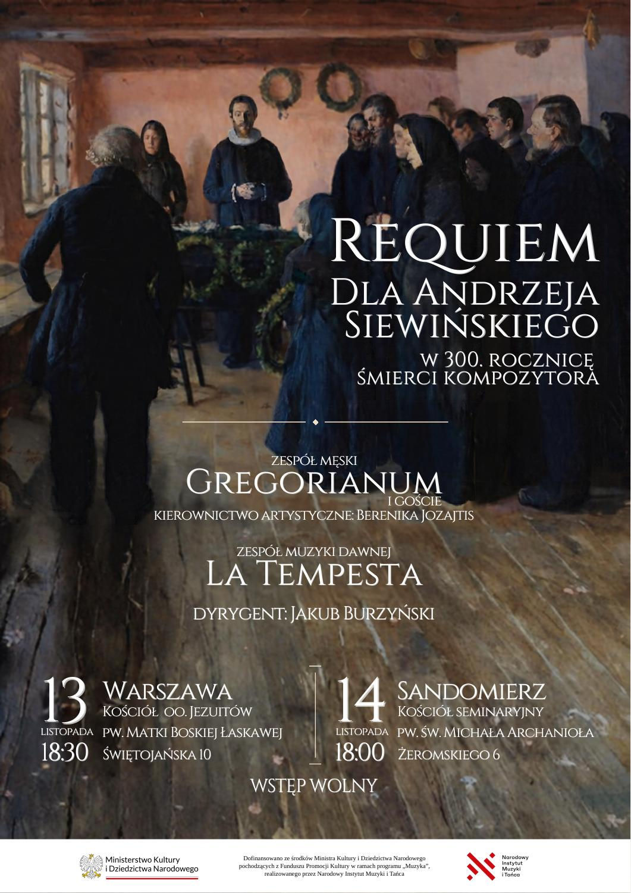

O projekcie
Muzyka przywrócona
pamięci
Koncert zatytułowany „Requiem dla Andrzeja Siewińskiego w 300. rocznicę śmierci kompozytora” poświęcony jest muzyce mało znanego twórcy epoki baroku. O życiu Siewińskiego wiadomo bardzo niewiele. Działał zapewne w Sandomierzu – tam zachowały się rękopisy jego utworów, mógł też być związany z sandomierskim lub krakowskim kolegium jezuitów.
Data jego śmierci również nie jest potwierdzona, można tylko ustalić, że zmarł w roku 1726 lub wcześniej. Jest to jednak okazja, by przedstawić spuściznę Siewińskiego szerszej publiczności. Do dziś zachowało się sześć jego kompozycji, z czego pięć zabrzmi w czasie koncertu.
Cykl czterech krótkich motetów to opracowanie hymnów otwierających Godzinki o Niepokalanym Poczęciu NMP. Missa pro Defunctis – znacznie bardziej okazała msza żałobna stanowi zaś opus magnum Siewińskiego i to ona ukazuje w pełni kunszt kompozytora.
Wykonawcy
Zespół Męski Gregorianum (i goście)
pod kierunkiem Bereniki Jozajtis
Zespół Muzyki Dawnej La Tempesta
Dyrygent: Jakub Burzyński

Materiały nutowe
Partytury i głosy
Wybierz partyturę lub pojedynczy głos, aby pobrać plik PDF.
| Autor i tytuł | Partytura | Głosy |
|---|---|---|
| Missa pro Defunctis | PART. | |
| Salve mundi Domina | PART. | |
| Salve arca federis | PART. | |
| Salve o puerpera, templum Trinitatis | PART. | |
| Salve horologium | PART. |
Ob — obój · Vn — skrzypce · BC — basso continuo